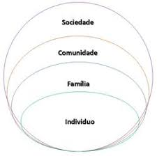
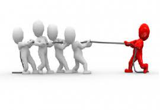
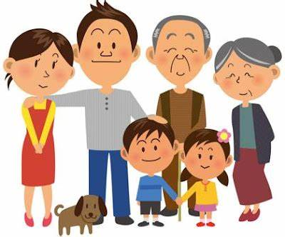
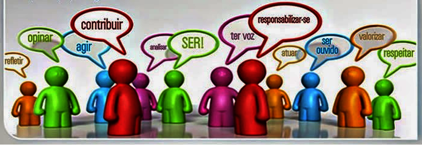
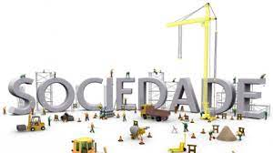

Mobilização na sociedade
A mobilização começa quando alguém se prontifica a coopera no lugar onde vive, existe vários grupos onde podemos está cooperando e assim produzindo uma possível mobilização.
Na sociedade costumamos a viver em grpos seja familiar ou na comunidade ás quatro áreas de convivência: indivíduo, familia, comunidade e sociedade.

INDIVÍDUO
Na Sociedade o primeiro grupo que trabalhamos é o indivíduo, no caso o (EU) para a mobilização acontecer o voluintário precisa se identificar com a missão e está disponível aos trablhos.

FAMÍLIA
A família é o segundo grupo mais importante das missões sociais quando trabalhamos o indivíduo logo após ele se torna uma ponte entre a equipe e a família, assim levamos a assitência necessária, apoiado e acompanhando os parentes

COMUNIDADE
O terceiro grupo é a comuinidade onde vivemos é bastnte importante, é a área local de trabalho e construção de disciplina.

SOCIEDADE
A última área engloba todas as partes com missão,visão e metas. aqui fazemos diversas pesquisas e atuamos onde está mais necessitado.